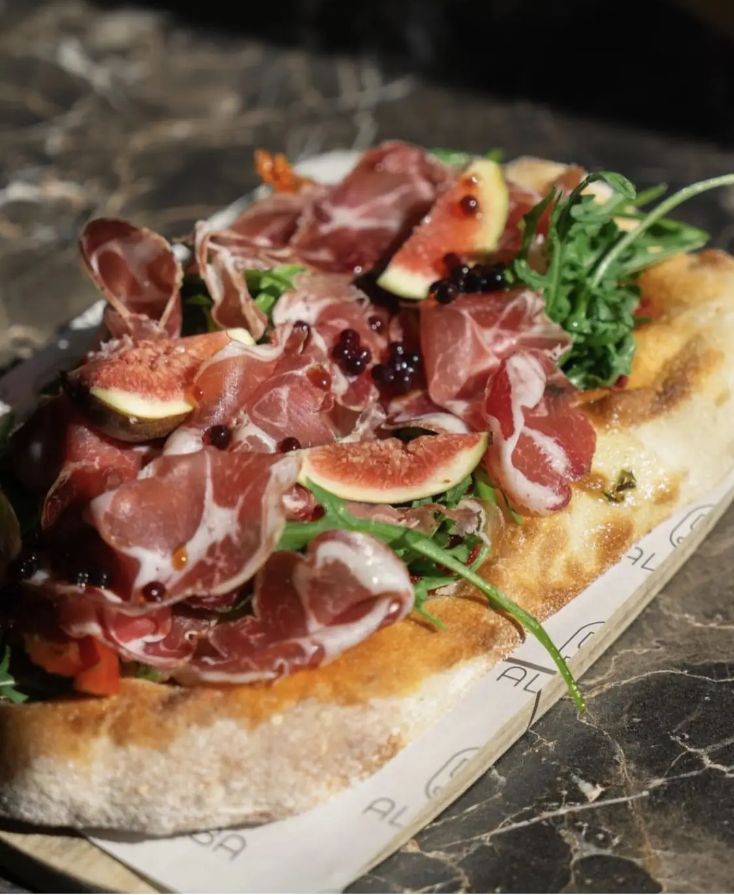
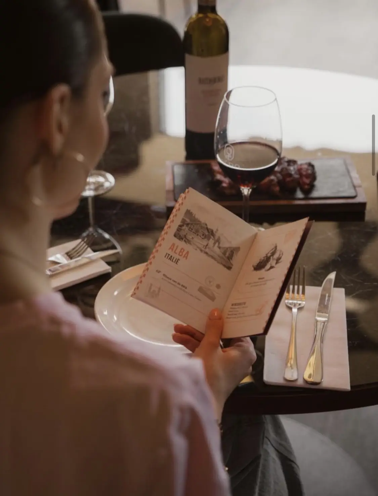
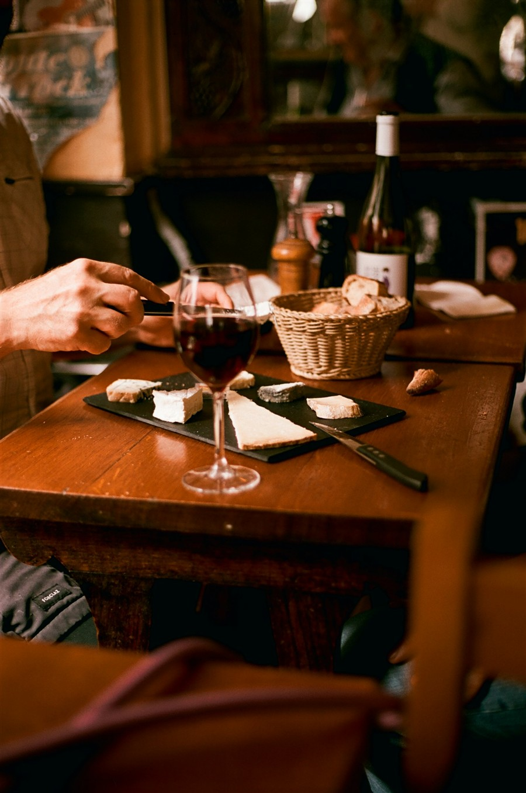
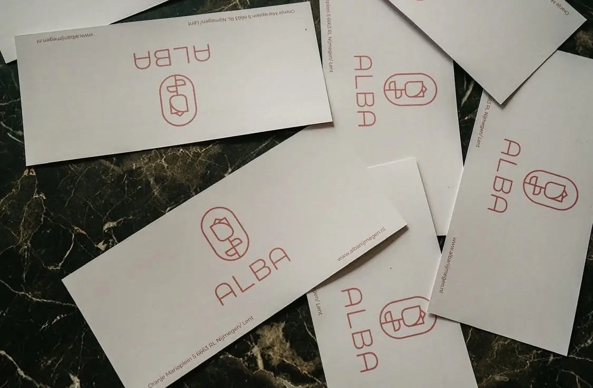

Oranje Marieplein, Lent
Koffie, lunch, shared dining & drinks
Van overdag tot ’s avonds. Schuif aan, deel, proef & geniet.
Maandag gesloten, dinsdag t/m zondag open.


Welkom bij Alba
Of je nu komt voor een goede kop koffie met iets lekkers, een gezellige lunch met onze huisgemaakte focaccia’s of uitgebreid wilt tafelen: bij ons ben je de hele dag welkom.
’s Avonds draait alles om Mediterranean shared dining. Verschillende smaakvolle gerechten op tafel, lekker samen delen en vooral genieten. Van vis en vlees tot verrassende vegetarische gerechten: er is voor ieder wat wils.
All Day Alba
Onze All Day kaart biedt voor ieder wat wils: van huisgemaakte focaccia’s en smaakvolle pintxos tot heerlijke gerechten om samen te delen. Bestel verschillende gerechtjes, zet de tafel gezellig vol en proef samen van alles. Precies zoals het hoort in de Mediterranée: ongedwongen, gezellig en vooral heel lekker.
Lunch vanaf 11.00 uur. Om te beginnen: kijk ook op onze tafelkaart voor een ruime keuze pintxos en aperitivo.
Focaccia
- Italiana14Mortadella, stracciatella, pistache, pesto, citroen
- Burrata ook vegetarisch te bestellen14Burrata, druiven, basilicum, serranoham, aceto balsamico
- Toscano15Venkelsalami, gorgonzola dolce, basilicum, rucola, vijg
- Bresaola17Bresaola, rucola, pesto, Parmezaan, truffelspread
- Caesar favoriet16Krokante kip, romaine, Parmezaan, Caesar-dressing, spek, krokante chips
- BBQ Pollo16Gebakken kippendijen, zwarte knoflook, whipped feta, ingelegde komkommer
- Paris15Warme truffel-brie, geschaafde amandel, dadelstroop, rucola
- + gebakken spek2
Brioche
- Club Alba favoriet17Gefrituurde kip, spek, kerrie mayonaise, Parmezaan, kropsla
- Salmone15Gerookte zalm van landgoed Doornik, koolsla, ei, dille, kruidenroomkaas, mosterdkaviaar
- Del Mare17Tonijnsalade, zalm, garnalen, avocado, koolsla, aioli
- Fritta lasagne14Krokante gefrituurde lasagne, mozzarella, Parmezaan, truffelmayonaise, basilicum
- Chèvre v15Geitenkaas, peer, amandel, rucola, honing
Salades
- Del Mare19Gerookte zalm, tonijnsalade, garnalen, komkommer
- Bresaola18Bresaola, pesto, Parmezaan, aceto balsamico, truffel
- Caesar18Krokante kip, romaine, Parmezaan, Caesar-dressing, ansjovis
- Chèvre v17Warme geitenkaas, peer, amandel, rucola, honing
Pinsa
Kruising tussen pizza en focaccia, warm geserveerd
- Salami14Venkelsalami, gorgonzola dolce, tomaat, basilicum
- Salmone16Gerookte zalm, stracciatella, citroen, rucola, kappertjes
- Serrano15Serranoham, stracciatella, aceto balsamico, basilicum
- Brie de Meaux v15Warme brie, spek, dadelstroop, peer, rucola
Lekker voor erbij
- Patatas bravas5
- Truffelfrietjes5
- Groene salade6
De kaart van Alba zelf: lunchkaart (pdf). Desserts staan onder Dolce Alba.
Om te beginnen: kijk ook op onze tafelkaart voor een ruime keuze pintxos en aperitivo.
Antipasti
Een eerste smaak van het zuiden
- Tonijn tartaar16Tonijn, avocado, zwarte knoflookcrème, citrus, kappertjes
- Siciliana mare17Selectie van koude vissoorten
- Steak tartaar14Cannoli, tartaar van rund, huisgemaakte pickles
- Burrata v14Stracciatella van burrata, geroosterde druif, balsamico, hazelnoot
- Saumon fumé14Gerookte zalm van landgoed Doornik, kruidenkaas, brioche, mosterdkaviaar
- Bresaola17Carpaccio, truffelspread, rucola, Parmezaan
- Tortilla de patatas v10Aardappeltortilla, manchego, gerookte aioli
- Fritta lasagne ook vegetarisch te bestellen11Gefrituurde lasagne, serranoham, basilicummayonaise
- Croquattas di Alba 3 st.12Huisgemaakte kroketjes, stoofvlees, comté kaas
Piatti caldi
Warme gerechten om te delen, vanaf 16.30 uur
- Tortellini Parmigiano v13Italiaanse pasta, Parmezaanschuim, beurre noisette
- Albondigas15Spaanse gehaktballetjes, tomatensaus, manchego
- Gamba pil pil15Gamba, knoflook, chili, olijfolie
- Pollo a la brasa16Kippendijen van de grill, zwarte knoflook, Parmezaanse kaas
- Champignons a la escargots v15Geroosterde paddenstoelen, Parmezaan, knoflook, kruiden, olijfolie
- Spitskool v15Van de BBQ, passievrucht, gerookte boter, hazelnoot
- Ribeye 200 gram19Gegrild, balsamico, zeezout
- Alba ribs15Zonder bot, langzaam gegaard, sticky lak, opa’s sambal
- Salmone15Gerookte zalm, romige pompoensaus, salie, hazelnoot
- Schelvis14Krokante schelvis, artisjok-remoulade, citroen, kappertjes
- Patatas bravas Alba v5Krokante aardappels, pittige aioli, paprika
- Parmezaan frietjes v6Dunne frietjes, Parmezaanse kaas, truffelmayonaise
Special, iedere vrijdag- en zaterdagavond
Baskische Txuleta
- Dry aged rund, aan het bot70Circa 750 gram. Dry-aged T-bonesteak op Baskische wijze gegrild boven houtskool. Geserveerd met patatas bravas. Bereidingstijd ± 40 min.
Bambinokaart
Vraag naar de Bambinokaart, te bestellen voor kinderen tot 12 jaar.
Tour de Favorito
Een selectie van onze persoonlijke favorieten. 10 tapas, 5 steden. Vanaf 2 personen, € 48,50 p.p.
Lees meer over de tourDe kaart van Alba zelf: dinerkaart (pdf).
Dolce Alba
- Tiramisu Alba ★7Mascarpone, espresso, cacao, amaretto
- Basque cheesecake6Burnt cheesecake, citrus, vanille
- Snicker cheesecake7Gezouten caramel, vanille-ijs, pinda
- Pastel de nata3Portugese custardtaart, kaneelsuiker
- Chocolate Alba7Warme chocoladecake, olijfolie, zeezout, vanille-ijs
- Lemon meringue7Citroen, Italiaanse meringue, pistache


Nieuw
Tour de Favorito
Een reis om te delen. Het is geen diner, maar een reis. Perfect voor wie wil delen, zonder gedoe. Wij bepalen het tempo, jullie genieten.
Tour de Favorito is onze tapasrondreis door Zuid-Europa, te reserveren vanaf 2 personen per tafel. In vijf zorgvuldig samengestelde rondes serveren wij tien hapjes, van lichte starters tot een rijk hoofdgerecht en een zoete afsluiting.
Om de reis extra bijzonder te maken, ontvang je bij de tour het ALBA Paspoort: een persoonlijk reisdocument dat een tastbare herinnering vormt aan jullie reis. Geen keuzestress, geen losse bestellingen.
Tour de Favorito wordt per tafel geserveerd en is perfect voor verjaardagen, zakelijke diners of lange avonden met vrienden. Wie wil, kan de reis uitbreiden met een bijpassend wijnarrangement, afgestemd op elke etappe.
5 rondes, 10 tapas
- Tour de Favorito
- € 48,50 p.p.
- Bijpassend wijnarrangement
- € 35 p.p.
Beschikbaar vanaf 2 personen per tafel, te bestellen vanaf 17.00 uur. Vraag bij reserveren naar ETAPPAS. Uitzonderingen niet mogelijk.
Reserveer telefonisch


Geef een beetje Alba cadeau
Sommige cadeaus zijn nóg leuker om samen van te genieten. Met de ALBA Gift Card geef je een moment van lekker eten, goede drankjes en vooral veel gezelligheid cadeau.
Kies zelf het gewenste bedrag, wij maken de Gift Card voor je klaar. De cadeaubonnen zijn verkrijgbaar en af te halen bij ons in het restaurant, tijdens onze openingstijden.
Openingstijden
| Maandag | Gesloten |
|---|---|
| Dinsdag | 12.00 – 22.00 |
| Woensdag | 10.00 – 22.00 |
| Donderdag | 10.00 – 22.00 |
| Vrijdag | 10.00 – 00.00 |
| Zaterdag | 10.00 – 00.00 |
| Zondag | 10.00 – 22.00 |
Reserveren & contact
Oranje Marieplein 5
6663 RL Lent
024-7851092
info@albanijmegen.nl
Reserveren voor de Tour de Favorito? Vraag naar ETAPPAS.